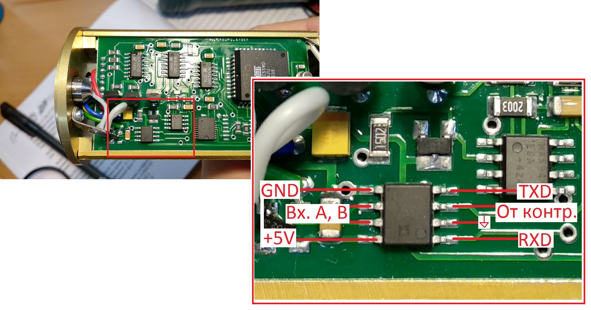
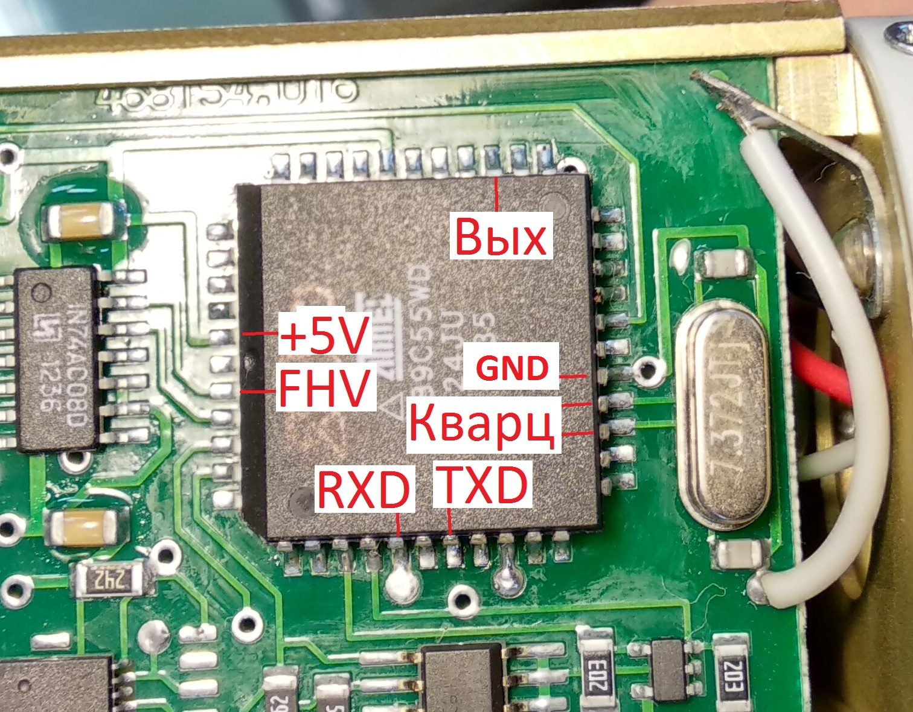

БДКГ-02. Если не подключается
Чаще всего причиной отсутствия обмена является неисправность микросхемы обмена и/или контроллера.
Проверка МС обмена:

- Проверить осцилографом 6-й или 7-й вывод: В программе SARKtech выбрать несколько адресов и
нажать "Установить связь" — на выводах должен появится сигнал — значит на МС
обмена сигнал со входа БД приходит
- Проверка 1-го вывода () В программе SARKtech выбрать несколько адресов и
нажать "Установить связь" — на выводе должен появиться сигнал. Если сигнал есть —
МС работает(микросхема передает сигнал на контроллер), если нет, значит её нужно менять
- На заметку — на 3-й вывод приходит ответ от контроллера, когда выбран правильный адреса БД
(т.е. сохраненный в памяти). Так можно узнать, какой адрес сохранен в памяти, но, конечно, проще
это делать через старый SARKtech
Проверка контроллера:

- При запросе со SARKtech c 31-го вывода должен идти ответный импульс
- Проверить сигналы с кварца — выводы 20 или 21
- Проверить 2-й вывод (FHV)
- Проверить питание — 22-й и 44-й вывод
- Всё должно работать. Иначе — перепаять контроллер
(Новый контроллер перед установкой прошить!!! )